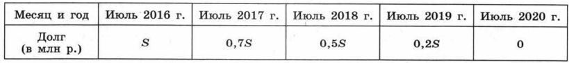

Для решения задач такого типа необходимо умение решать текстовые задачи повышенной сложности.
1. ДВ июле Виктор планирует взять в кредит 2,5 млн рублей. Условия его возврата таковы:
— каждый январь долг возрастает на 20% по сравнению с кондом предыдущего года;
— с февраля по июнь каждого года Виктор должен выплатить некоторую часть долга.
На какое минимальное количество лет Виктор может взять кредит, чтобы ежегодные выплаты были не более 760 тысяч рублей?
2. В июле 2016 года Тимур планирует взять кредит в банке на четыре года в размере S млн р., где S — целое число. Условия его возврата следующие:
— каждый январь долг увеличивается на 15% по сравнению с концом предыдущего года;
— выплата должна производиться один раз в год с февраля по июнь;
— в июле каждого года долг должен составлять часть кредита в соответствии со следующей таблицей:
Найдите наибольшее значение S, при котором общая сумма выплат Тимура будет меньше 30 млн р.
3. Зоопарк распределяет 111 кг. мяса между лисами, леопардами и львами. Каждой лисе полагается 2 кг. мяса, леопарду – 14 кг., льву 21 кг. Известно, что у каждого льва бывает ежедневно 230 посетителей, у каждого леопарда – 160, у каждой лисы 20. Сколько должно быть лис, леопардов и львов в зоопарке, что бы ежедневно число посетителей у этих животных было наибольшим?